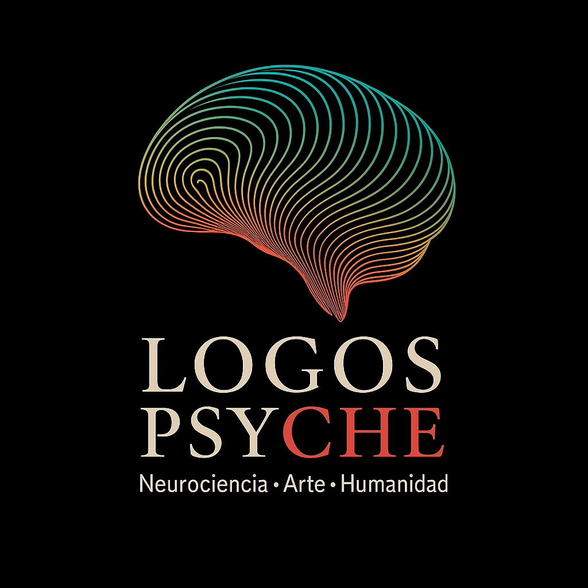

Neurociencia · Arte · Humanidad
Ser es el verbo más revolucionario.

PSIQUIATRÍA
Psiquiatría basada en evidencia, escucha profunda y humanidad.
Un espacio clínico para pensar, sentir y sostener procesos reales,
sin prisa y sin juicio.
Los libros están hechos de libros. Las personas estamos hechas de otras personas. Cada historia es una cita con otra historia.
PROYECTOS
Historias reales observadas con cuidado y tiempo.
No para explicar lo humano,
sino para permanecer frente a el.
ESCRITURA
Textos para leer con tiempo: ensayo, clínica, cultura y vida interior.